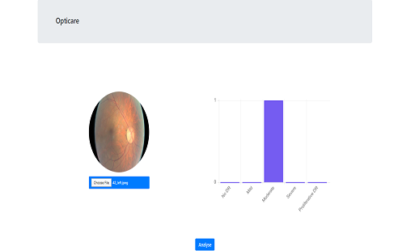
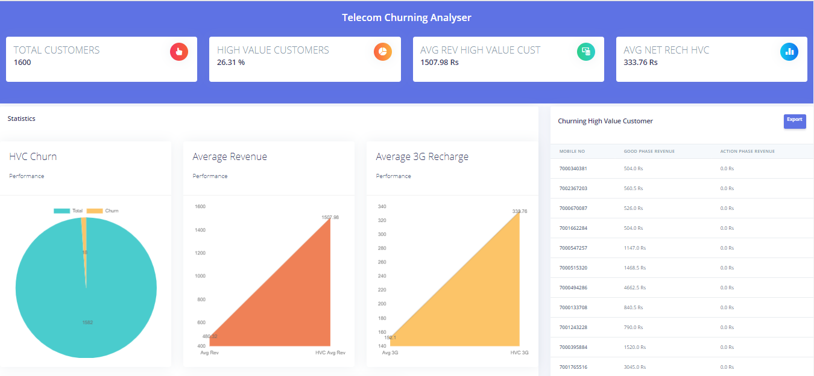
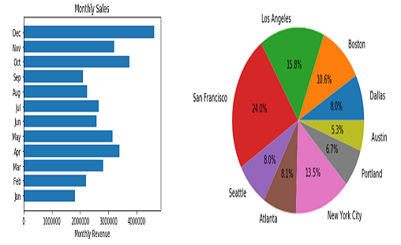
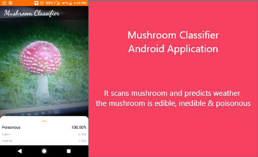
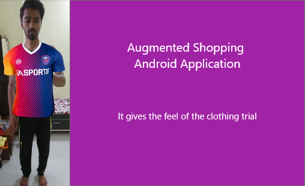

This webapp has a scratch pad like paint. Model for this webapp is trained on MNIST hand written digits dataset. When we draw any digit and click predict. This app create image of it and convert it to grayscale and pass it to model for prediction. (Used CNN)

In this project during AI move it take current state of the board and generate all the possible moves which are then fed to Neural Network which inturn returns probability of wining on all moves and the move who has highest probability of winning is played.

Created an application for detection stages of diabetic retinopathy. Dashboard was created with Bootstrap and the deployment of the application was through Flask. (Used CNN)

It predicts all the list of churning customer and necessary statistics which can help in business decisions. (Used Decision Trees)

It contains 12 months of Kmart data of the sales. Prediction of best month of sales, city has highest sales, most recommended time, products most often sold, etc. (Uses Numpy, Pandas, Matplotlib)

This application classifies weather the mushroom is edible, inedible or poisonous. It also shows the probability of prediction. It is deployed on android platform.(CNN is used)

Yet to come technology in the market atleast in India. This android application gives you the feel of trying the clothes on us. (Used Posenet)
This application is created to decrease the pain of the teacher. It is like a personal assistance for the teachers. It ease their day-to-day activity. It has OCR capability.(Visualizations dashboard for most modules & Google Vision Api is used for calculations)